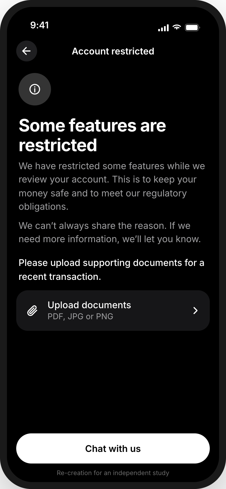
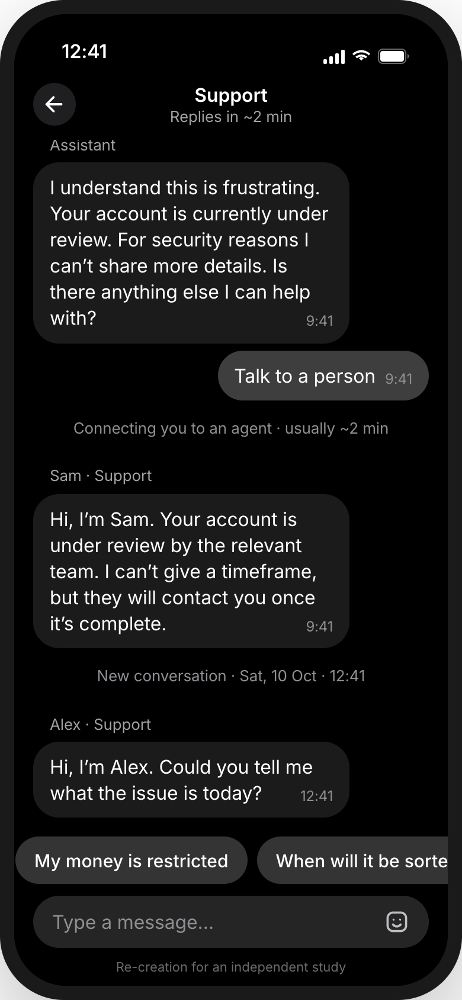
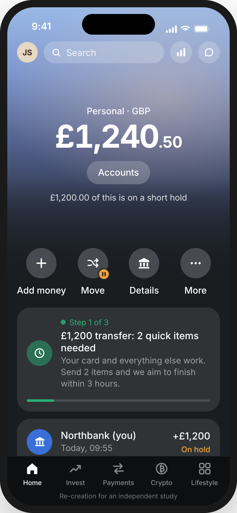
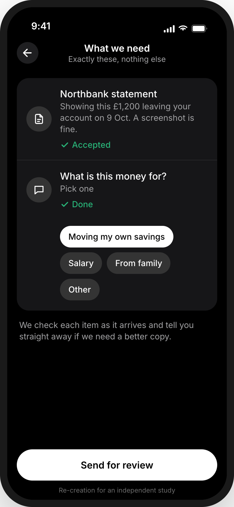
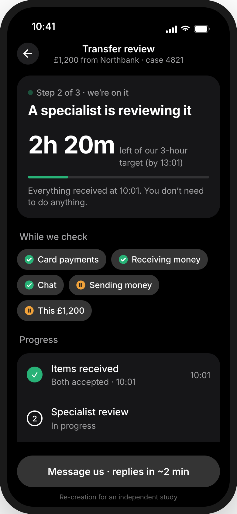
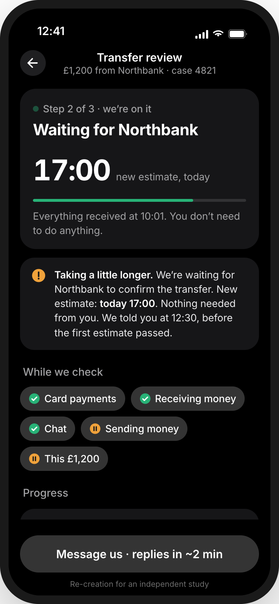

Holds stop fraud and meet the law. Revolut already handles the quick case well: a declined payment opens an in-app questionnaire, and confirming it unfreezes the card. In 4,391 recent App Store reviews, 61 describe a hold: 6 resolved fast and happily, 55 turned into cases that ran for days, and 23 of those complain about no timeline. This keeps the quick check and puts Revolut’s own 3-hour target on the screen for the long ones.
Independent study by Mitul Vaghasiya, not affiliated with Revolut. Every screen below is my re-creation in Revolut’s visual style, based on its App Store screenshots (10 Oct 2026) and the public images listed in references/. They are not screenshots of the real app.
Re-created in the real app’s style. Where no public image of a state exists, it follows reviews and help pages, as noted in the case study.

1After the card is fixed, the hold gets a generic page: some features restricted, upload “supporting documents”, no timeline.
Visibility of system status
2Chat replies fast, but nobody can give a timeframe, and the next agent asks what the issue is. Built from reviews and help pages.
Recognition over recallThe same moment, in 4 screens.

1“£1,200 of this is on a short hold”, only Move carries a pause mark, and the card says everything else still works.
Match with the real world
2A statement showing this £1,200 on 9 Oct, and what it’s for. Each item is checked for glare and turns “Accepted” on arrival.
Error prevention
3“2h 20m left of our 3-hour target”, from the moment everything arrived. What still works and what’s paused, as chips.
Uncertain waits feel longer
4If the target will slip, the app says why in plain terms, gives a new estimate, and says nothing is needed, before the first one passes.
Honest urgencyDoes the live clock make people calmer, or add pressure? If 3 of 5 testers say it makes them more anxious, or a moved estimate costs more trust than no estimate, the idea needs rethinking.